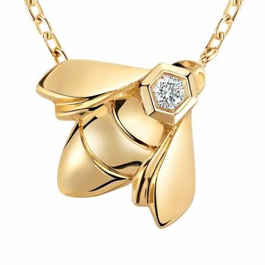

Jewelry has always depended on permanence.
A ring can outlive the person who first wore it. A necklace can move through generations. A design created a century ago can return decades later and still be immediately recognizable. Few luxury categories depend so heavily on the idea that an object should retain meaning long after the moment in which it was made.
And yet jewelry is entering one of the most technologically disruptive periods in its history.
Lab-grown diamonds are becoming increasingly mainstream, artificial intelligence is entering gemological grading, blockchain is being used to document provenance, and historic maisons are being asked to prove not only that their pieces are beautiful, but where their materials came from and why their designs deserve their value.
It may have made it more valuable.
Chaumet is perhaps one of the clearest examples. Founded in Paris in 1780, the maison has spent almost 250 years building a visual vocabulary around tiaras, nature, Joséphine and Place Vendôme. Today, it is revisiting that heritage while changing how its materials are sourced.
In 2025, Chaumet introduced a Bee de Chaumet pendant made entirely from responsibly sourced and traceable gold. In 2026, it extended that approach into High Jewelry, presenting pieces crafted using 100 per cent traceable gold.
The interesting part is that the house did not abandon its history to appear modern.
It used the bee — one of its established symbols — to communicate something new.
That feels increasingly important in jewelry. Innovation works best when it does not erase the archive, but gives the archive another reason to exist.
This return to history is happening across the industry. Boucheron, Cartier, Chaumet and other major maisons continue to revisit archival motifs and historic design codes. The archive is no longer simply a room filled with old sketches. It has become an active brand asset: something that can be reinterpreted, protected and continuously brought back into contemporary culture.

But perhaps the most interesting example is not a house that has continuously existed.
It is one that disappeared.
Oscar Massin is perhaps the clearest example of heritage being revived rather than preserved behind glass.
Massin was a major 19th-century French jeweler known for technical innovation and elaborate diamond work. His creations appeared at the Universal Expositions in Paris, and he developed techniques that allowed precious metal to take on an almost lace-like quality.
He retired in 1892.
More than a century later, the name was brought back to life.
But the revived Oscar Massin did not simply reproduce antique jewelry.
Instead, the new house turned toward lab-grown diamonds, recycled gold and recycled platinum — taking the identity of a historic French jeweler and rebuilding it around a distinctly contemporary idea of responsible luxury.
The designs still look backward. Creative director Sandrine de Laage revisited Massin's lace-like techniques, floral motifs and intricate settings, translating elements of his original design language into contemporary collections. But the materials and technology surrounding those designs look forward.
That contradiction is exactly what makes Oscar Massin interesting.
A revived 19th-century maison built around lab-grown diamonds initially sounds almost wrong. High jewelry has traditionally built its mythology around natural rarity, exceptional stones and objects that have survived generations.
If Massin himself built his reputation through experimentation, perhaps innovation is part of the heritage.
In that case, technology is not destroying authenticity.
It is being used to reinterpret it.
That leads to a much bigger question facing jewelry.
A laboratory-grown diamond has essentially the same chemical and physical characteristics as a natural diamond, but its relationship with rarity is fundamentally different. Lab-grown stones can be produced rather than discovered after billions of years of geological formation.
As production has increased, they have also become significantly more accessible.
The natural-diamond industry has responded by emphasizing exactly what a laboratory cannot reproduce: geological age, provenance, scarcity and history.
And this is where I think design becomes even more important.
Imagine two visually similar stones.
If the material itself is no longer enough to create enormous differentiation, then the setting, silhouette, craftsmanship, authorship and story surrounding that stone become increasingly responsible for creating value.
In other words, perhaps the future of jewelry is not simply about what the object contains, but who imagined it.
For luxury houses, design has always been creative. But it is also legal.
Industrial design protection can cover the visual appearance of jewelry — including its shape, lines, patterns and ornamental characteristics — while trademarks protect distinctive signs associated with a maison. The World Intellectual Property Organization specifically recognizes jewelry among the products that can receive industrial-design protection.
That turns a recognizable design into something more than an aesthetic choice.
Think about how quickly certain pieces can be recognized without seeing their logo. Cartier's Love bracelet. Van Cleef & Arpels' Alhambra. Boucheron's Quatre. Bulgari's Serpenti.
Their value is not contained entirely in the quantity of gold or the carat weight of their stones.
Part of what the customer is purchasing is recognition.
And that recognition has been built over decades.
This makes archives enormously valuable. A historic motif can be brought back, altered, placed into a new collection and introduced to an entirely new generation without completely losing the meaning accumulated around it.
Cartier understands this particularly well. Its historical collection and archives preserve thousands of pieces and documents that record the development of the maison's design language. Authenticity therefore becomes more than determining whether a bracelet is real or fake. It is also about preserving the visual memory of the house.
At the same time that brands are looking backward into their archives, they are turning toward increasingly sophisticated technology to prove where objects come from.
Cartier joined LVMH and Prada in creating the Aura Blockchain Consortium, which was designed to provide luxury products with secure digital information around authenticity, ownership and provenance.
The diamond industry is undergoing a similar transformation.
GIA has invested in Tracr, a blockchain-based platform designed to strengthen diamond provenance and traceability. GIA has also worked with IBM Research on artificial intelligence capable of assisting diamond clarity grading by analysing imagery against its enormous database of previously graded stones.
There is something almost paradoxical about that.
Objects traditionally authenticated through hallmarks, certificates, archives and the trained eye of a jeweler are increasingly being supported by algorithms and digital ledgers.
But perhaps this is not a rejection of traditional jewelry culture at all.
It is an extension of it.
For centuries, hallmarks existed to communicate origin and trust. Certificates did the same. Archives allowed maisons to trace pieces created decades earlier.
Blockchain and artificial intelligence are simply introducing new tools into a very old obsession:
Lab-grown diamonds are often presented as the sustainable answer to mined stones.
The reality is more complicated.
Growing diamonds requires significant amounts of energy, meaning their environmental footprint can vary dramatically depending on where and how they are produced. A laboratory powered primarily by renewable electricity presents a very different environmental equation from one operating on a fossil-fuel-heavy grid.
So "lab-grown" does not automatically mean "sustainable."
That is why transparency may ultimately become more important than the simple distinction between a stone created underground and one created above it.
Different jewelry companies are already taking very different approaches.
Pandora has pushed heavily into lab-grown diamonds and has begun communicating carbon-footprint information alongside them. Oscar Massin has made lab-grown stones and recycled precious metals part of the identity of its revived maison.
Chaumet, meanwhile, has not abandoned natural stones. Instead, it has focused part of its sustainability strategy on traceability and responsible sourcing, including traceable gold.
Neither approach represents the entire future of jewelry.
And perhaps that is the point.
There may not be one future for jewelry.
There may be several.
One future values natural diamonds because they are scarce, ancient and impossible to reproduce geologically.
Another values lab-grown stones because technology makes diamonds more accessible and offers different possibilities around sourcing and production.
And somewhere between them sits the heritage maison, trying to preserve centuries of craftsmanship while proving that history does not have to mean resistance to change.
Oscar Massin complicates the usual argument that lab-grown diamonds weaken heritage. In this case, technological innovation is positioned as part of the heritage itself — a continuation of the founder's reputation as an innovator rather than a rejection of tradition.
That is what makes jewelry so interesting right now.
The stone still matters.
But increasingly, value is being created around it — through design, provenance, intellectual property, craftsmanship, transparency and the story a house is able to protect.
Perhaps the future of jewelry will not be defined by whether something is natural or manufactured.